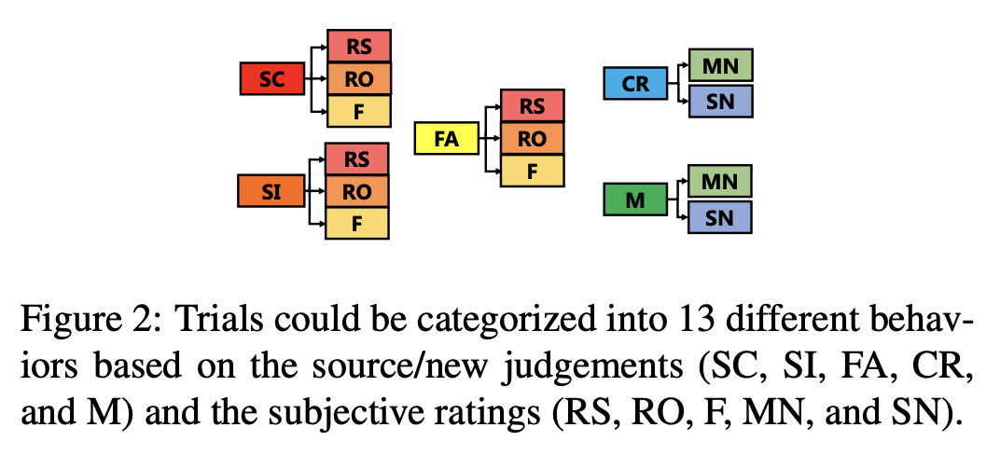

ML preproc
This package preprocess and assumed a very specific data type and structure. The details of the data structures and their associated meanings is documented at tutorials->data_format.
This package is essentially a custom filter that choose the binary classes out of all combinations.
Background
Each observation has a 72 dimensional EEG features, and has two identifiers accordingly – source/new judgements and subjective ratings. Those categorized each observation into 13 different classes.

This package will filter the classes information based on the desired positive and negative class label.
API
preproc
preproc (file_path, experiment_num)
Preprocessing package that preprocess the given the features in multi class settings, get out the desire class.
preproc.__init__
preproc.__init__ (file_path, experiment_num)
Initialize the Preprocessing module and load the appropriate dataset
| Type | Details | |
|---|---|---|
| file_path | str | file path to the matlab matrix data |
| experiment_num | int | denotes the experiement number |
preproc.filter_index
preproc.filter_index (pos_source_label:int, pos_resp_label:int, neg_source_label:int, neg_resp_label:int)
A simplified version of prepare label. Instead of returns all the dataset (X, y, group), this only returns a boolean array of the corresponding index Since the data is in a nested array (in other words, 2-d array with different dim), the returned element should also be a nested array.
The purpose of this is to prepared for multi-subclass merge for a single class preparation
| Type | Details | |
|---|---|---|
| pos_source_label | int | the positive class’s source label. for details, please refer to the above encodings |
| pos_resp_label | int | the positive class’s response label |
| neg_source_label | int | the negative class’s source label |
| neg_resp_label | int | |
| Returns | np.ndarray | the nested boolean array that indicates the location of the positive class. |
preproc.filter_index_single_class
preproc.filter_index_single_class (source_label:int, resp_label:int, include_left_out=True)
Variant of the above’s filter_index. This method get out the indices of a specific class (single class indexer)
| Type | Default | Details | |
|---|---|---|---|
| source_label | int | source label. for details, please refer to the above encodings |
|
| resp_label | int | response label | |
| include_left_out | bool | True | |
| Returns | np.ndarray | the nested boolean array that indicates the location of the positive class. |
preproc.merge_two_class
preproc.merge_two_class (pos1, neg1, pos2, neg2)
Apply logical OR to two positive class and two negative class Purpose is to merge 1 and 2
| Type | Details | |
|---|---|---|
| pos1 | np.ndarray([Object]) | the positive class 1 index array |
| neg1 | np.ndarray([Object]) | the negative class 1 index array |
| pos2 | np.ndarray([Object]) | the positive class 2 index array |
| neg2 | np.ndarray([Object]) | the negative class 2 index array |
| Returns | np.ndarray | the merged nested boolean array that indicates the location of the positive class. |
preproc.get_data_by_index
preproc.get_data_by_index (pos_idx, neg_idx, eliminate_trails=True)
given positive and negative index array, indexing out the given data matrices and flattern them out
This will exclude the subject with 10 or fewer trials on each class.
| Type | Default | Details | |
|---|---|---|---|
| pos_idx | np.ndarray | the nested boolean array that indicates the position of the positive class |
|
| neg_idx | np.ndarray | the nested boolean array that indicates the position of the negative class |
|
| eliminate_trails | bool | True | whether we choose to leave out the participant with ten or less class label |
| Returns | np.ndarray | the input for the formatted flattern data |
preproc.get_data_by_index_single_class
preproc.get_data_by_index_single_class (idx)
Variant of the aboves get_data_by_index, but with single class idx given an index array, indexing out the given data matrices and flattern them out
This will exclude the subject with 10 or fewer trials on each class.
| Type | Details | |
|---|---|---|
| idx | np.ndarray | the nested boolean array that indicates the position of the desire class |
| Returns | np.ndarray | the input for the formatted flattern data |
/opt/hostedtoolcache/Python/3.9.17/x64/lib/python3.9/site-packages/fastcore/docscrape.py:225: UserWarning: Unknown section Notes
else: warn(msg)preproc.get_data_by_participant
preproc.get_data_by_participant (participant)
Given a participant’s identifier (generated in the constructor), index out the X for that corresponding participant.
| Type | Details | |
|---|---|---|
| participant | int | id of the participant |
| Returns | np.ndarray | the input for the formatted flatten data |
/opt/hostedtoolcache/Python/3.9.17/x64/lib/python3.9/site-packages/fastcore/docscrape.py:225: UserWarning: Unknown section Parameters:
else: warn(msg)
/opt/hostedtoolcache/Python/3.9.17/x64/lib/python3.9/site-packages/fastcore/docscrape.py:225: UserWarning: Unknown section Outputs:
else: warn(msg)preproc.generate_projections
preproc.generate_projections (clf, pos_idx_highlight, neg_idx_highlight, X, y, subject, balance=False, plt=<module 'matplotlib.pyplot' from '/opt/hostedtoolca che/Python/3.9.17/x64/lib/python3.9/site- packages/matplotlib/pyplot.py'>)
A function used to generate the projections based on the classifier and according to different positive and negative classes.